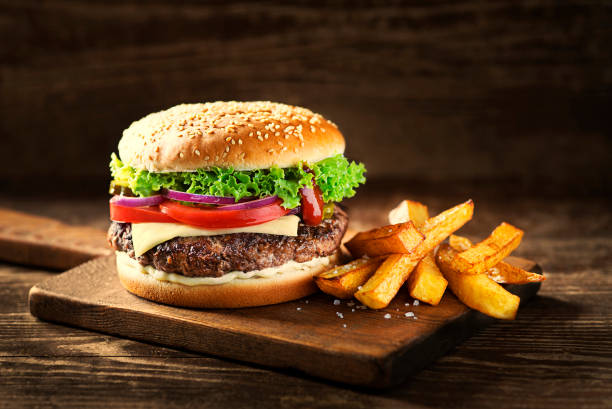

Hamburger

Description
This is a recipe for the well-known dish called hamburger
Although there are many variations, we chose one that is liked by many
Ingredients
- Tomatoes
- Lettuce
- Cheese
- Beef patty
- Onions
- Hamburger buns
- Mayonnaise
- Lightly toast and butter the hamburger
- Grill the beef patty
- Assemble with all the ingredients in the preferred order